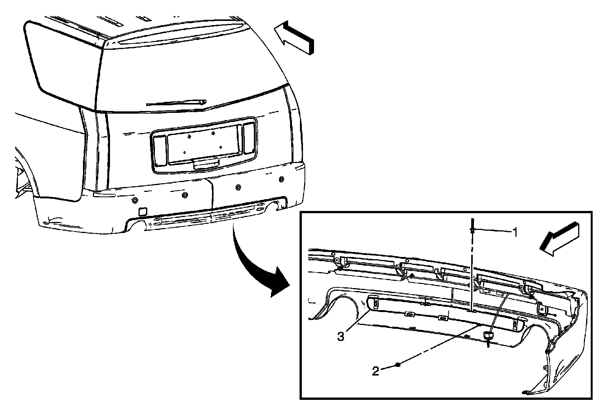
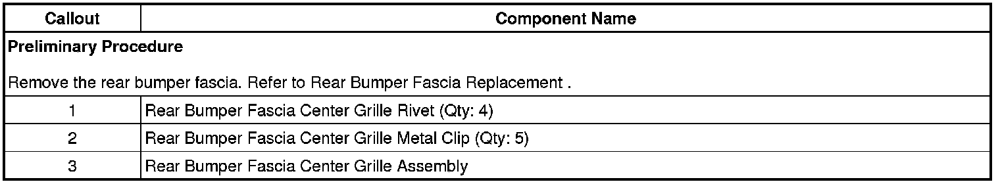

Operation CHARM
: Car repair manuals for everyone.
Home
>>
Cadillac
>>
2008
>>
SRX AWD V8-4.6L
>>
Repair and Diagnosis
>>
Body and Frame
>>
Bumper
>>
Rear Bumper
>>
Rear Bumper Cover / Fascia
>>
Service and Repair
>>
Rear Bumper Fascia Center Grille Replacement (R1T, R1X)
Rear Bumper Fascia Center Grille Replacement (R1T, R1X)
Rear
Bumper
Fascia Center
Grille
Replacement (R1T, R1X)

